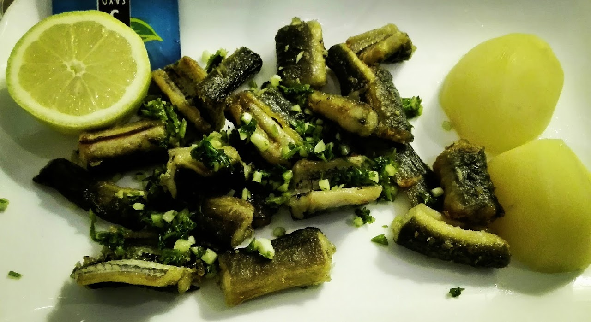

Une expérience culinaire chaleureuse au 5 Av. Jean Jaurès

Situé au 5 Av. Jean Jaurès, le Restaurant Terre et Mer vous accueille dans une ambiance conviviale et chaleureuse. Notre équipe met tout en œuvre pour vous offrir un moment de détente autour d'une cuisine généreuse. Que ce soit pour un déjeuner rapide ou un dîner en famille ou entre amis, nous sommes ravis de vous recevoir.
Découvrez nos plats préparés avec soin. Pour connaître nos suggestions du jour, n'hésitez pas à nous contacter directement.
« Excellent restaurant de quartier. L'accueil est fort agréable, la cuisine est élaborée et délicieuse, tout cela à un prix modéré. Parfait. Terre & Mer, c'est exactement le genre d'adresse qui donne une identité à un quartier. Pas prétentieux, pas tape-à-l'œil, mais une cuisine sincère, maîtrisée, avec ce petit supplément d'âme qui fait qu'on s'en souvient. Une cuisine maison qui ne triche pas, un accueil chaleureux, une clientèle locale fidèle, et ce côté "on est bien ici" qui ne s'achète pas. »
« Restaurant tenu par un couple sympathique. Bien placé juste en face du Tram A en bas Cenon et une petite terrasse devant. Ici la qualité est toujours présente. Les plats sont excellents. Le patron cuisinier est toujours à l'écoute. Sa femme au service et toujours le mot pour rire. Très bon Cadillac ainsi que le punch. Bravo à vous deux. De retour ici toujours excellent. »
Plongez dans l'ambiance du Restaurant Terre et Mer à travers quelques clichés de notre établissement et de nos plats.
| Lundi | 11h45 – 14h15 |
| Mardi | 11h45 – 14h15 |
| Mercredi | 11h45 – 14h15 |
| Jeudi | 11h45 – 14h15 |
| Vendredi | 11h45 – 14h15 |
| Samedi | 11h45 – 14h15 |
| Dimanche | Fermé |
Pour toute réservation ou demande d'information, remplissez le formulaire ci-dessous et nous vous répondrons dans les plus brefs délais.